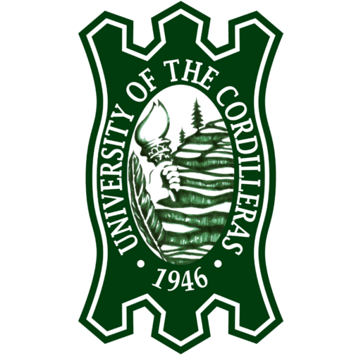
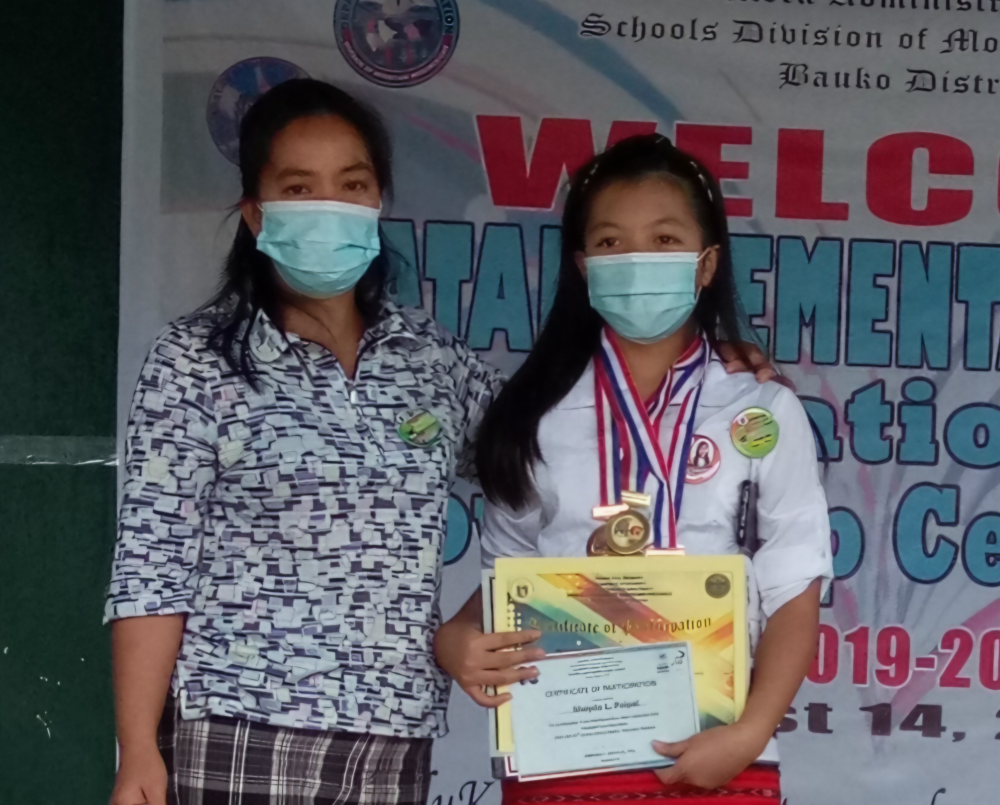
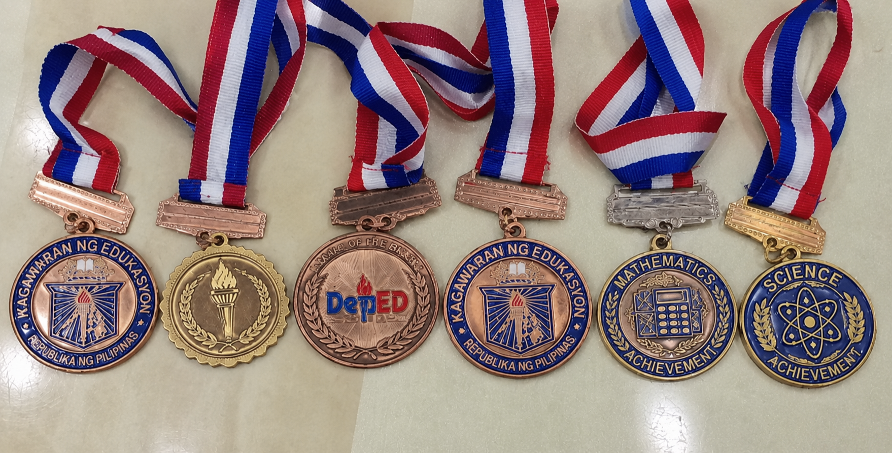
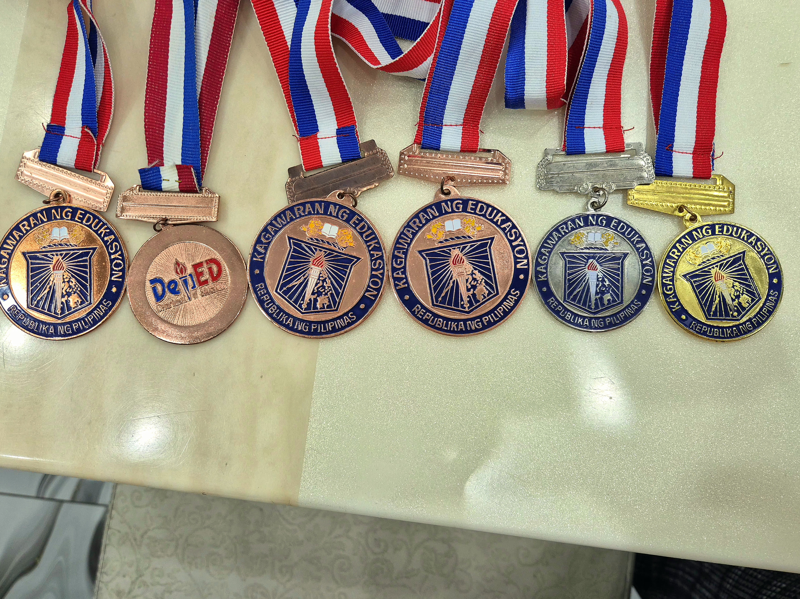
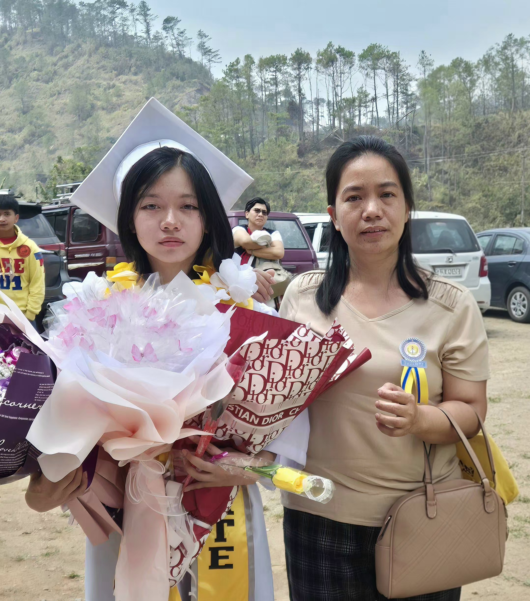
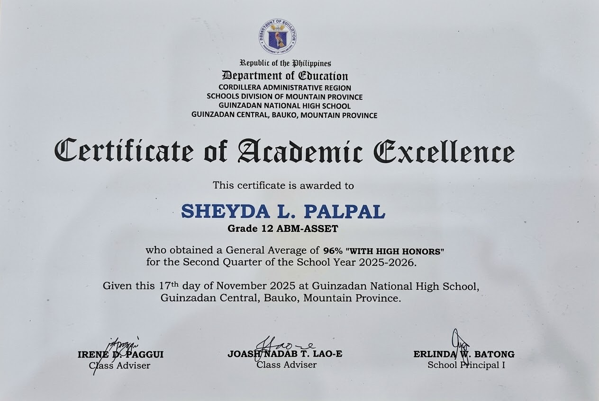
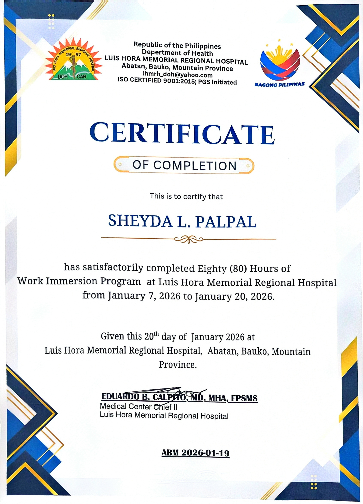

Abatan Elementary School2020
Guinzadan National High School2026

University of the Cordilleras● Current
Abatan Elementary School2014 – 2020


- Academic Excellence Award, 94% With Honors
Grade 6 - Good Conduct Award
Grade 6 - Journalism Achievement Award
3rd Place, English Sports Writing · Grade 6 · Represented Abatan Elementary School - District Level Quiz Bee Award
1st Place, Science · Grade 6 · Represented Abatan Elementary School - Mathematics Achievement Award
Grade 5 - Science Achievement Award
Grade 6
Guinzadan National High School2020 – 2024
DiplomaJunior High SchoolGuinzadan National High School · 2024


- With High Honors, 95% Overall Academic Award, Grade 7
- Best in Music
Grade 10 - With Honors, 94% Overall Academic Award, Grade 8
- With High Honors, 95% Overall Academic Award, Grade 9
- With High Honors, 95% Overall Academic Award, Grade 10
- Best in Arts
Grade 9 · Entrusted by the school to paint its center piece after my earlier artworks
Guinzadan National High School2024 – 2026

Diploma · 2026Senior High SchoolStrand: Accountancy, Business and Management
Certificate of Academic ExcellenceGeneral Average of 97%“With High Honors”

Certificate of Academic ExcellenceGeneral Average of 96%“With High Honors”
Academic Milestones
